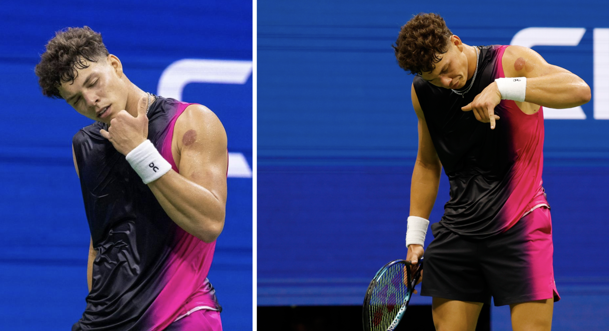

Beating the Clock: Age vs Performance in Professional Tennis
By Natalie Brewer | November 12, 2023
This year, the US Open winners had the unique distinction of being both the youngest since 1999 and the oldest on record - with a stunning 16 year age gap, their victories raised questions over what truly is the peak age of performance in tennis.
As the echoes of the last US Open rallies fade this September and the dust settles on the 2023 Grand Slam season, tennis fans everywhere take a moment to reflect on a year of electrifying Grand Slam matches.
It was a particularly riveting US Open, full of both nail-bitingly suspenseful and heartwarming storylines. Enter 20-year-old Ben Shelton, the unseeded rookie who came into the spotlight and ran through titans from Thiem to Tiafoe… cheekily “phoning in” his victories all the way to the semi finals.
We also watched proudly as 19-year-old Coco Gauff not only showcased her indomitable spirit, standing up for herself in the face of unfair treatment, but also clinched that shiny silver trophy. It was an especially charming moment, as Gauff became the youngest American to do so since Serena Williams in 1999.
In contrast to this pair of fresh-faced kids stood the seasoned veteran of the sport himself, Novak Djokovic, who, at age 36, rewrote a record of his own: oldest player ever to win the tournament. Further, his triumph over Daniil Medvedev raised whispers, once again, about whether the 27-year-old can ever truly step into the colossal shoes of his predecessors before age catches up with him.
So what really is the relationship between age and performance in professional tennis? Inspired by these dichotomous, age-centric stories out of Queens, NY, I performed a data-driven analysis that attempts to answer some of the classic questions surrounding peak age in tennis.
What is the magic age? Will it always be magic?
What exactly is peak age?
As a child who grew up watching tennis during Roger Federer’s glory days, I was astonished that someone "so old" could continue to compete at the top level. Looking back I realize that “so old” was 30.
Everyone seems to have an opinion on when the human body is optimally equipped for the specific physical demands of tennis. The prevailing notion is that players have a sharp upswing in performance in their early 20s, and are already on their way to retirement–albeit more gradually– by age 30. Needless to say, the “mid-twenties peak” is so embedded in the discourse that my eight-year-old self could pick up on such perceptions about Federer.
Peak age is a complex issue, which makes it essential to turn to the data for answers. After all, the age at which athletes reach their prime results from an interplay of factors including muscle mass and composition, cardiovascular health, lung capacity, flexibility, bone density, and more. So rather than attempting to isolate and decipher any one of these tricky physiological determinants, we take a performance-driven approach.
Leveraging data sets from the Jack Sackman Tennis Database and Ultimate Tennis Statistics, we can discern the patterns surrounding the ages at which players hit their prime on paper. Unfortunately, due to the relative unavailability of clean data for the Women’s Tennis Association (WTA) historical rankings, the scope of the analysis presented in this article is limited to men’s tennis.
Magic Number 25
According to two separate metrics, it appears that most players reach their prime in the mid-twenties–specifically ages 24 and 25, solidly establishing Djokovic’s feat at the US Open this year as a radical outlier.
We first examine the ages at which male players achieve their highest ranking on the traditional ATP scale. These rankings are determined by the number of points a player collects throughout the ATP tour. When a player participates in an event, they earn a number of points, contingent on the round they reach and the tournament's prestige. In other words, winning a final match at a Grand Slam fetches many more points than winning, say, a round of 16 match in an ATP Tour 500 event.
The following chart showcases the most common ages for players to reach their personal career-high ATP ranking since 1970.
Examination of this histogram reveals that 24 and 25 stand out as the most common ages for players to attain their maximum ranking in the ATP system.
We can also take a look at the same metric, but using the zero-sum Elo rating system, originally created for chess by a physics professor, which takes into account the rating of the opponent, thus placing higher value on victories against top-rated players compared to wins against those with lower ratings. Using Elo rating data, we see that the most common age to achieve peak performance is 25.
Figures 5-8: Number of winners at each age for four Grand Slam events
It's worth repeating that while these plots provide interesting insights, they can be somewhat speculative and standalone in nature. For a more comprehensive and definitive perspective, one should refer to the peak ranking analysis above or the compilation of this data below, which has a larger combined sample size.
This Grand Slam winners’ age analysis hammers home the previous findings, while reminding viewers of the abnormality and remarkability of the 2023 US Open Champions, aged 19 and 36.
Is 30 the new 25?
When mingling with tennis enthusiasts or browsing the online message forums, it's not uncommon to hear statements that sound something like “players tend to hit their prime much later these days” or “30 is the new 25”. But do these statements find support in the data?
Reworking the peak Elo rating dataset to fit a more temporal basis, we can see that the answer is yes…for the most part.
It's clear that it was more common for players in the eighties to reach their prime before the age of 25 than it is for players today. In fact, the most common age for players to hit their Elo prime was about 23 years old. This is a whole three years younger than the prevailing peak age for players since 2010.
So, the age for players to reach their personal peak ranking has increased across the sport. Can we draw similar conclusions from the Grand Slam winner data?
In the following chart, the average age of the winners from the four Grand Slams are plotted for each year. For example, the 2017 data point captures the mean age of winners from the US Open, Wimbledon, Roland Garros, and the Australian Open. That year, it happened that Rafael Nadal and Roger Federer each won two titles. They were 31 and 36 respectively, which is why the chart spikes in 2017.
At first glance, there doesn’t initially appear to be a crystal-clear linear trend, but rather constant fluctuation. However, the absolute minimum on the graph does occur in 1953 and the absolute maximum in 2017. Furthermore, the linear regression hints at a very gradual upward trend.
Are the GOATs skewing the data?
Continuing our analysis of the above chart, things get particularly interesting at the turn of the century. This era was so heavily dominated by the Big Three–Federer, Nadal, and Djokovic– that the chart actually seems to follow their personal aging journeys. Between the summer of 2005 and the summer of 2012, there were thirty Grand Slam tournaments. Of those thirty, exactly one title was claimed by someone outside of the Big Three!

So while it may seem like the ideal age for winning tournaments increased at a one-for-one rate during the 2000s and 2010s, this increase is owed more so to select stars adding another year to their ages.
Technology may be driving the increase in peak performance age
Both methods of analysis employed here suggest an increase in peak age for players in the past 40 years. Why might this be? Ultimately, we can only speculate, but it's no secret that the environment of the sport itself has had lots of time to change in the past forty years.
As research grows and technology improves, fitness, training and recovery techniques have improved as well. Advancements in sports science have affected almost every part of a tennis player’s regimen, from the shoes they lace up in the morning to what they eat for breakfast. That is, everything from equipment to nutrition has improved over time.
Further, as prize pools grow and TV viewership is made increasingly accessible, players are forced to grapple with higher levels of pressure than ever before. Perhaps this high-stress atmosphere requires a mental stamina and maturity that takes time to develop.
Thus, the modern tennis player benefits from a combination of advanced training, better medical care, improved equipment, and a deeper understanding of the game's depth and psychology.
Ultimately, while data suggests a "magic age" in the mid-twenties, outliers like Djokovic remind us that individual spirit and the evolving nature of tennis can redefine these boundaries. Meanwhile, outliers like Gauff and Shelton remind us that the sport's magic lies not just in its predictability, but in its capacity for surprise.